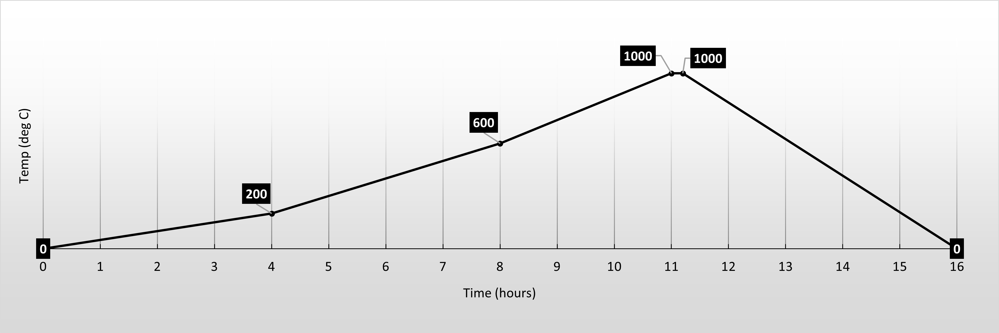

Kiln Control
Power Up Display Sequence
- Close kiln door and check bungs.
- Set toggle switch to "ON".
- All LED and 7 segments displays will briefly light up.
- Next the display input type is shown.
- Then the display range is shown.
- Ready for use.
- The current kiln temperature is shown.
The Home Screen will display at the end of the start-up sequence. This screen can be reached from any programming menu by pressing the A/M key twice. The controller will also revert to the home screen if no key is pressed for 60 seconds.
NOTE: The A/M key should be held for 2 seconds each time it is pressed.

Run Instructions
- Follow the Power Up sequence.
- Press SET repeatedly until ‘Ptn’ displays on the PV screen.
- Press < .The green digit in the SV display starts to blink.
- Press ∧ or ∨ to change the pattern number.
- Press SET to set the number. The SV value will stop flashing.
- Press ∧ to run the program.
Key Operations
The Home Screen can be reached from any programming menu by pressing the A/M key twice. The controller will also revert to the home screen if no key is pressed for 60 seconds.
NOTE: The A/M key should be held for 2 seconds each time it is pressed.
| Ops | Keys | Description | Display |
|---|---|---|---|
| RUN | ∧ | Starts program. | PRO Light: ON PV Display: Flashes ‘RUN’ code 3 times. |
| CHECK | SET x 3 | Check the parameters. | Cycles through the program parameters. |
| HALT | ∨ | Pauses program. | PRO Light: ON PV Display: Alternates between PV reading and ‘HALT’ message code. |
| JUMP | ∧ and SET | Skip/jump to next segment. Hold Up and press SET once to skip 1 segment. Press SET twice to skip 2 segments, etc. |
PRO Light: ON |
| RESET | Power OFF/ON. Then ∨ and SET |
Stop running program. | PRO Light: OFF PV Display: Flashes ‘REST’ code 3 times. |
Controller Interface
| Symbol | Name | Function |
|---|---|---|
| PV | Measured process value (PV) display | Displays the measured value from the input source or various character information such as parameter or error codes (Red) |
| SV | Set value (SV) display | Displays the target set value or the various parameter values during set‐up (Green) |
| SET | Set key | Used for calling up different parameters and storing set values |
| A/M | Auto/Manual Key | Switches between Auto (PID) output mode and Manual output mode |
| < | Shift Key | Shifts digits when changing settings |
| ∨ | Down Key | Decreases numeric value of selected digit (-1000, -100, -10, -1) |
| ∧ | Up Key | Increase numeric value of selected digit (+1000, +100, +10, +1) |
| OUT1 | OUT1 Lamp | Lights when OUT1 is active (Green) |
| AL1 | Alarm 1 Lamp | Lights when Alarm 1 is activated (Red) |
| AL2 | Alarm 2 Lamp | Lights when Alarm 2 is activated (Red) |
| PRO | Program Running lamp | Lights when the program is running |
| Out1% | Out% bar‐graph display | Output% is displayed on 10‐dot LED indicator |